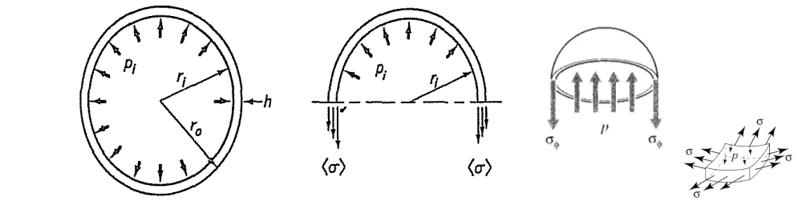
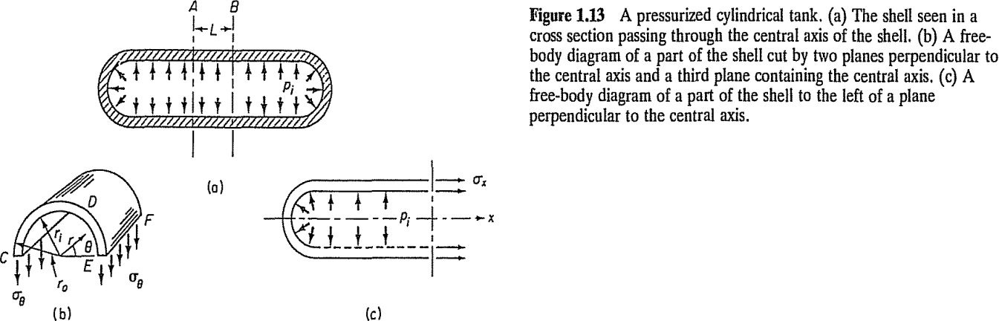
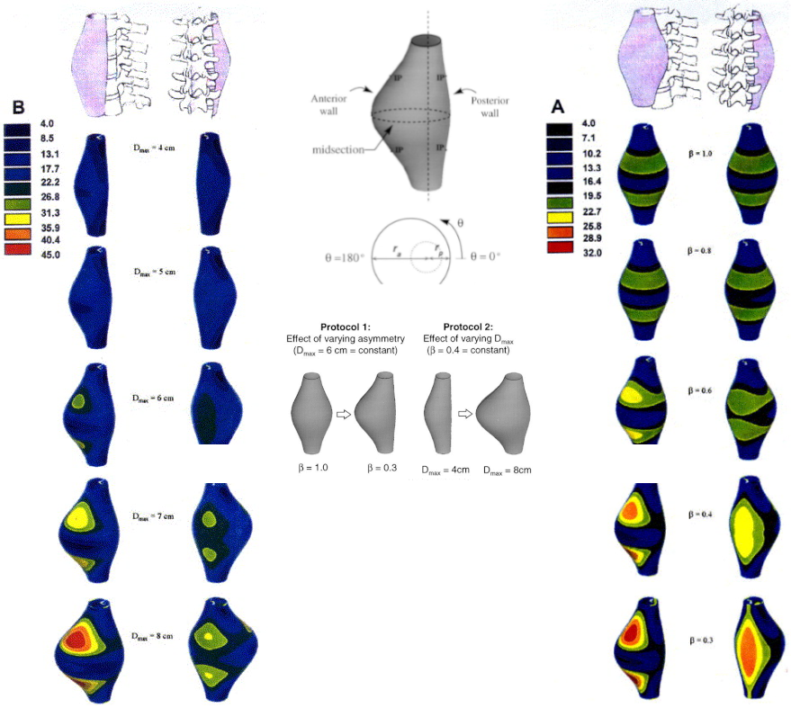

Chapter 3: The Stress Hypothesis
Reading: [Fung/94] Chapter 3
2026-03-19
(\(\S1.6\)) The Stress/Traction Hypothesis
Consider a material \(B\) occupying a spatial region \(V\). The body is transmitting a balanced load system shown with surface forces in red and boundary constraints in blue. A traction field arises within the body during this transmission. The word traction roughly describes the flow of load per unit area. To illuminate the traction field in a region visualize an enclosing surface \(S\) around it and imagine the interaction between the inside (\(-\)) and the outside (\(+\)) of \(S\).

The Stress/Traction Hypothesis
Let a neighborhood \(\Delta S\) on \(S\) have an outward unit normal \(\boldsymbol{\nu}\), with its direction pointing outward from the interior. Let the accumulation of load applied by the (\(+\)) side on the (\(-\)) side passing thru \(\Delta S\) be represented by \(\Delta \mathbf{F}\). The stress hypothesis can be stated: as \(\Delta S\) tends to a small but bounded size \(\alpha\), the ratio \(\Delta \mathbf{F}/\Delta S\) tends to a definite limit \(d\mathbf{F}/dS\), and the moment of the force acting on the surface \(\Delta S\) about any point within the area vanishes. This limiting vector, called as the traction or the stress vector can be written as \[ \overset{\nu}{\mathbf{T}} = \frac{d\mathbf{F}}{dS}. \]

Tractions on Cartesian Planes
At an internal point, the standard procedure is to calculate the tractions \(\overset{1}{\mathbf{T}}, \overset{2}{\mathbf{T}}, \overset{3}{\mathbf{T}}\) that arise on the planes cornered by a Cartesian triad \(\boldsymbol{e}_1, \boldsymbol{e}_2, \boldsymbol{e}_3\).

- We combine the three Cartesian tractions as the columns of the transpose of a tensor \(\boldsymbol{\tau}\) as \[ \left[ \overset{1}{\mathbf{T}}, \overset{2}{\mathbf{T}}, \overset{3}{\mathbf{T}} \right] \triangleq [\tau]^\mathsf{T} \]
The Stress Tensor
The tensor, \(\boldsymbol{\tau}\), constructed by stacking the three Cartesian internal traction vectors in rows is called as the stress tensor. The stress tensor components read \[ \begin{bmatrix} \tau_{11} & \tau_{12} & \tau_{13} \\ \tau_{21} & \tau_{22} & \tau_{23} \\ \tau_{31} & \tau_{32} & \tau_{33} \end{bmatrix} = \begin{bmatrix} \overset{1}{T_1} & \overset{1}{T_2} & \overset{1}{T_3} \\ \overset{2}{T_1} & \overset{2}{T_2} & \overset{2}{T_3} \\ \overset{3}{T_1} & \overset{3}{T_2} & \overset{3}{T_3} \end{bmatrix} \hspace{2em} \mathrm{or} \hspace{2em} \tau_{ij} = \overset{i}{T_j} \]

Properties of Internal Traction Vectors
The state of stress at a point in a material is described by internal traction vectors on a differential cube element.
Freehand depiction of traction vectors on the cube
- The differential cube has six faces, three of which have (\(+\)) normals and the other three have (\(-\)) normals.
- The three traction vectors corresponding to (\(+\)) faces are \(\overset{1}{\mathbf{T}}, \overset{2}{\mathbf{T}}, \overset{3}{\mathbf{T}}\), and the other three associated with the (\(-\)) faces are \(\overset{-1}{\mathbf{T}}, \overset{-2}{\mathbf{T}}, \overset{-3}{\mathbf{T}}\).
- The action-reaction principle of Newton can be used to relate the traction vectors on opposite cube faces as \[ \overset{i}{\mathbf{T}} = -\overset{-i}{\mathbf{T}} \hspace{2em} \mathrm{or} \hspace{2em} \overset{i}{T_j} = -\overset{-i}{T_j} \]
- It is standard convention to decompose the traction vector, \(\overset{\nu}{\mathbf{T}}\), into it’s normal part, \((\boldsymbol{\nu} \cdot \overset{\nu}{\mathbf{T}}) \boldsymbol{\nu}\), and it’s remaining part, \(\overset{\nu}{\mathbf{T}} - (\boldsymbol{\nu} \cdot \overset{\nu}{\mathbf{T}}) \boldsymbol{\nu}\), which is in-plane of the surface.
Properties of Stress Components
In parallel with the parts of the internal traction vectors, the stress components that are normal to the plane are called as normal stress while those components which are in-plane are known as shear stress. \[ \mathrm{normal} \left\{ \begin{array}{c} \tau_{11} \\ \tau_{22} \\ \tau_{33} \end{array} \right. \hspace{2em} \mathrm{shear} \left\{ \begin{array}{c} \tau_{12}, \tau_{13} \\ \tau_{21}, \tau_{23} \\ \tau_{31}, \tau_{32} \end{array} \right. \]
Freehand depiction of traction vectors on the cube
- The normal stresses are given a (\(+\)) sign if they point away from the surface (in tension) and a (\(-\)) sign if they point towards the surface (in compression).
- The shear component (e.g. \(\tau_{ij}\)) is considered as positive if it is acting in the \(+j\) direction on a plane that has a normal in \(+i\) direction, or is in the \(-j\) direction on a plane that has a normal in \(-i\) direction.
Examples
- Show the following stress components on a differential cube element \(\tau_{11} = 12\) MPa, \(\tau_{21} = -6\) MPa, \(\tau_{31} = 5\) MPa, and \(\tau_{33} = -8\) MPa, with all the remaining stress components identically equan to zero.
Write the components shown on the stress cube in matrix form.

(\(\S1.11\)) Examples to Elementary Traction Fields
Slender Cylindrical (Axial) Members
A member (independent part of a structure) is said to be slender, if it has a great length to thickness ratio, i.e., \(L/T>>1\), and a constant or slightly-varying cross section swept along the normal to the cross-section plane (a.k.a. member’s longitudinal or axial direction). Such objects in geometry are known as cylinders.

Axially Loaded Cylindrical Members
Consider a member under a compressive force \(W\). We say that the beam is axially loaded without shear. Applying the stress hypothesis, we will obtain the relevant traction vector.

- Relabel coordinates (\(x\to x_1\), \(y\to x_2\), \(z\to x_3\)).
Take a section of the member using the \(x_3\) plane from the mid-span (region)
The mapping \(\boldsymbol{\nu} \to \boldsymbol{e}_3\) yields \(\overset{\nu}{\mathbf{T}} \to \overset{3}{\mathbf{T}}\)
Derivation of Nominal Normal Stress (Assumptions and Conventions)
About the traction flow, we assume that:
- there is no reason that the load would distribute non-uniformly over the cross-section!! (i.e., there is uniform distribution, \(dW/dA = W/A\), leading to \[ \overset{3}{T_3} = \tau_{33} = \sigma = \frac{W}{A}. \] Here \(\sigma\) denotes the nominal normal stress. It has units of load per area (e.g. N/cm\(^2\)).
- Under uniaxial loading, and in planes with normals parallel to the load axis, only normal traction arises (no shear tractions, i.e. \(\overset{3}{T_1} = \overset{3}{T_2} = 0\)).
- Over planes that contain the load axis (whose normal will not not have an \(\boldsymbol{e}_3\) component), zero traction previals!! That means \(\overset{1}{\mathbf{T}}=\mathbf{0}\) and \(\overset{2}{\mathbf{T}}=\mathbf{0}\), which yield the state of stress \[ [\tau] = \begin{bmatrix} 0 & 0 & 0 \\ 0 & 0 & 0 \\ 0 & 0 & \tau_{33} \end{bmatrix} \]
- The given state of stress (having all shear terms identically zero) is also known as a state of principal stress.
Example: Loading of the Femur

- Femur is the largest and most massive bone in the our body.
- Assume the load component in the axial-plane to be negligible?? (which is the same as saying the load is entirely axial and no shear component is taken)
- Using average values for a standard female, determine the normal compressive stress. (search keywords: CDC standard anthropometric measurements female data)
- Knowing the femur axis deviates from the vertical (gravity axis) on the average by some small angle (e.g. 9 degrees), what is a more realistic state of stress?
State of Stress on a Plane that is Not Normal to the Load.

- Assume a deviation of 8 degrees between the axial load and the femoral axis, determine the shear stress to normal stress ratio observed on an axial plane.
Plates under Plane Stress
Plane State of Stress
thin flat plates or membranes stretched by in-plane load systems

- found in ship hulls, pressurized bodies, wings, panels
- under these conditions the out-of-plane stress components vanish.
- if you choose a reference coordinate frame whose any two axes lie along the plate’s plane, then you get a reduced stress tensor, such that (continue to next section)
Reduction of the Stress Tensor to 2-D
- We may choose the plate coordinate pair to be \((1,2)\), \((2,3)\), or \((1,3)\), in which cases the corresponding stress tensors would read: \[ \tau_{ij} = [\tau] = \begin{bmatrix} \tau_{11} & \tau_{12} & 0 \\ \tau_{21} & \tau_{22} & 0 \\ 0 & 0 & 0 \end{bmatrix}, \, \{i,j=1,2\}, \quad \begin{bmatrix} 0 & 0 & 0 \\ 0 & \tau_{22} & \tau_{23} \\ 0 & \tau_{32} & \tau_{33} \end{bmatrix}, \, \{i,j=2,3\}, \quad \mathrm{or}, \; \begin{bmatrix} \tau_{11} & 0 & \tau_{13} \\ 0 & 0 & 0 \\ \tau_{31} & 0 & \tau_{33} \end{bmatrix}, \, \{i,j=1,3\} \]
- The two non-zero coordinate components can be combined in a reduced stress tensor, depicting the state of plane stress as \[ \tau_{ij} = [\tau] = \begin{bmatrix} \tau_{11} & \tau_{12} \\ \tau_{21} & \tau_{22} \end{bmatrix}, \, \{i,j=1,2\} \]
- There is no special symbol or indicator, whatsoever, that is used when the dimension of space is reduced from 3 to 2, \([\tau]\) prevails. The dimensionality is understood from the context.
The Scapula (A flat bone)

Loading and Fracture of Scapula
The state of in-plane loading of the scapula, and the most frequently observed fracture modes (according to OrthoInfo)

- A nominal stress calculation does not exist for this case (details about loading and boundary restraints should be provided to pose a proper boundary-value problem)
Stresses in Pressurized Vessels
Many biological examples of pressurized biological tissue may be provided.
- Lung tissue: Maintains subatmospheric interstitial pressure (−2 to −9 mmHg) due to elastic recoil, crucial for alveolar expansion and gas exchange.
- Kidney: Encapsulated organ with positive interstitial pressure (up to +10 mmHg), aiding fluid filtration and urine formation.
- Vasculatory system components, veins are pressurized biological tissues, but they operate under much lower pressure compared to arteries. Central venous pressure is typically 5–8 mmHg, whereas the typical pressure at mesenteric arteries is 70–90 mmHg.
Simplifying Geometry: Spherical Baloons
Here, we seek for solution of the state of stress in geometries that are similar to spheres.
a biaxial state of stress, with the nominal membrane stress labeled as \(\sigma\), prevails

- Based on the concept of the free-body diagram (provided above), the balance of forces in equilibrium requires that \(\pi (r_o^2 - r_i^2) \sigma = \pi r_i^2 p\),
- from which, the nominal membrane stress is solved in terms of \(p\), the internal pressure: \[ \sigma = \frac{r_i^2 p}{h(r_o + r_i)} \approx \frac{pr}{2h}, \, \mathrm{when} \; t/r_i \ll 1, \, \mathrm{and} \; r_i \approx r_o \triangleq r \]
- SAMPLE CALCULATION
A sample physiological calculation of membrane stress in an abdominal aortic aneurysm (AAA) uses patient-specific geometry and biomechanical modeling. For a spherical or ellipsoidal aneurysm under internal pressure, Laplace’s law gives circumferential wall stress as \(\sigma = pr/2h\) where the blood pressure \(p=120\) mmHg \(\approx 16\) kPa, lumen radius, \(r = 30\) mm, wall thickness, \(t = 1.5\) mm, yields \[ \sigma = \]
Simplifying Geometry: Cylindrical Tubes
A cylindrical vessel, a.k.a the tube is one of the most important inventions used ubiquitiosly in the world.
- tubes usually convey pressurized media and the tube walls are subjected to pressurization.
- there are many biological examples, but the primal one is our veins and arteries.
- a state of uniaxial or biaxial stress arises in tubes, depending on the longitudinal end conditions.
Stresses in Inflated Tubes
Similar to the free-body diagram was used in the case of spherical vessels, the cylindrical nominal membrane stress is found based on the below free-body diagram

- a biaxial state of stress endures, with the nominal hoop stress, \(\sigma_\theta\), and nominal longitudinal stress, \(\sigma_x\).
Mechanical wall stress in abdominal aortic aneurysm: Influence of diameter and asymmetry

(\(\S3.2\)) Laws of Motion
(\(\S3.3\)) Cauchy’s Formula
(\(\S3.4\)) Equations of Equilibrium
(\(\S3.5\)) Transformation of Stress
educational application hub: